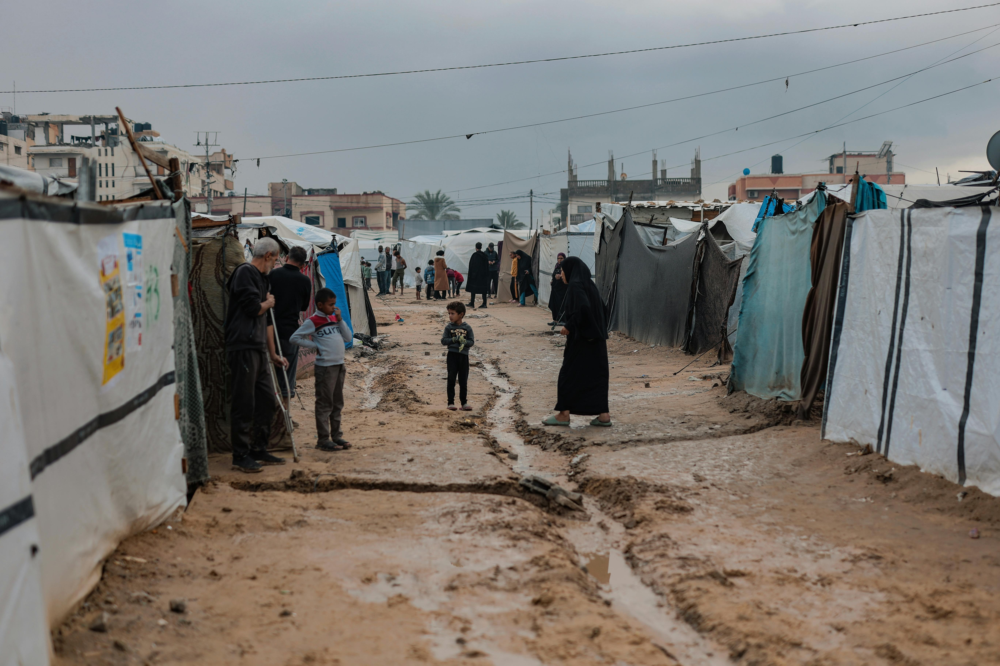

سرعة الاستجابة.. إنقاذ للأرواح
نحن نوثق كل خطوة في طريق الإغاثة. اطلع على تقاريرنا الميدانية وانضم لآلاف المتطوعين حول العالم.
نحن نوثق كل خطوة في طريق الإغاثة. اطلع على تقاريرنا الميدانية وانضم لآلاف المتطوعين حول العالم.

تأسس الاتحاد ليكون الجسر الرابط بين الأزمات والحلول. نحن منظمة متخصصة في الاستجابة السريعة للكوارث، نجمع بين الخبرة التقنية المتقدمة والعمل الميداني المباشر لتخفيف المعاناة في أسرع وقت ممكن.
تقديم الدفعات الإغاثية الأولى والتقارير الميدانية الدقيقة للجهات الحكومية والمانحين.
عالم يتمتع فيه المتضررون بالدعم الفوري والكرامة الإنسانية من خلال تكنولوجيا الاستجابة.
التشريح البنيوي للكارثة.
تحميل التقرير (PDF) ←